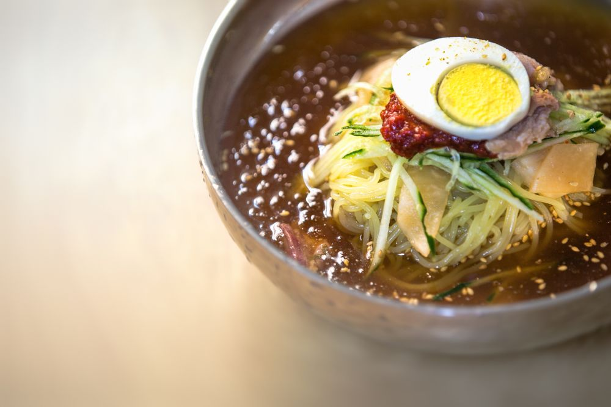
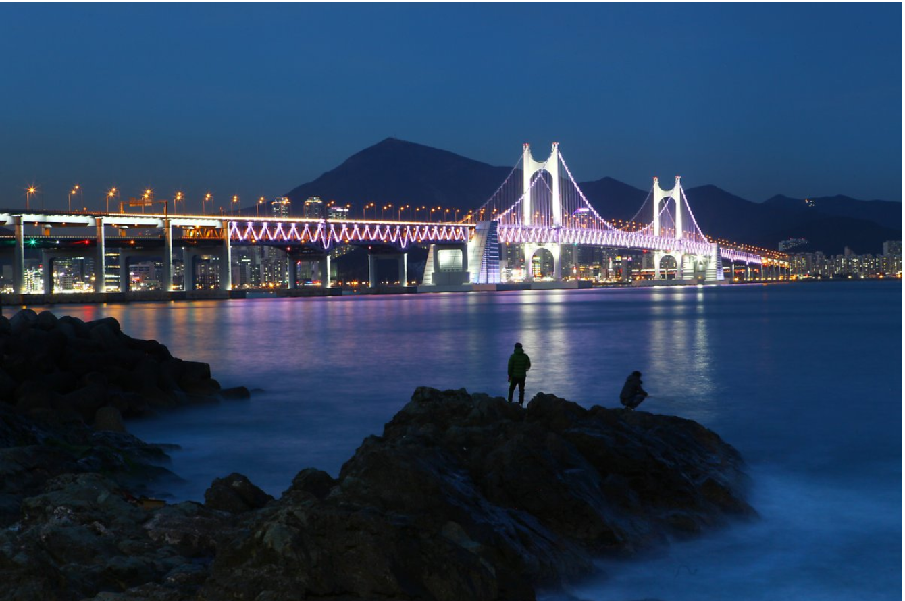
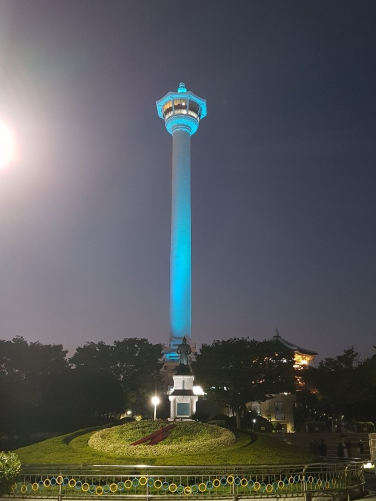

Food
밀면이 무엇?
밀면이 무엇인지 아시나요? 냉면인가..? 국수인가..? 도대체 뭐지??
시원한 육수에 양념장으로 맛을 낸 것이 냉면과 비슷하지만, 보다 부드럽고 굵은 면발이 바로 밀면이자 밀면의 매력!!!
⭐️⭐️⭐️⭐️
개인적으로 냉면을 더 좋아해서 별 네개를 줬음.
꿀팁 : 가위로 자르지 않고 먹어야 밀면의 쫄깃함을 온전히 느낄 수 있고, 밀면에 식초와 겨자를 적당히 넣어주면 감칠맛이 뿜뿜!!
View
홍콩의 야경 못지않은 부산의 야경
부산의 야경 명소 중 하나인 이기대 해안산책로를 소개합니다.
⭐️⭐️⭐️⭐️⭐️
오후 늦은 시간 5km의 해안 산책로를 따라 열심히 걸어가다보면 종점인 동생말 전망대에서 아름다운 광안대교 야경을 볼 수 있답니다. 분위기도 좋고 정말 이쁘지 않나요?
마음이 확 풀리는 기분이 드네요. 단, 산책로에 좁고 가파른 구간이 있기 때문에 너무 늦은 시간에는 방문하지 않기로 해요!
#인생샷 #언제까지 #걸어가? #야경
이기대 해안산책로 코스 : 동생말~어울마당~농바위~오륙도선착장까지
( 총 길이는 4.7km )
소요시간 : 약 2시간 30분
Landmark
용두산 공원 & 부산타워
이번에 소개해드릴 용두산 공원과 부산타워는 외국인이나 부산을 처음 방문한 사람에게 추천하는 명소! 두둥등장!
⭐️⭐️⭐️
타지인들에게는 강추하지만, 랜드마크라 소개하는 느낌이 강하다.
타워가 밤이되면 색깔이 바뀌어요!! 추억과 인생샷 두마리 토끼를 잡고 싶다면? 부산타워로 Go Go!!
공원 운영시간 : 상시 개방
부산타워 운영시간 : 10:00~23:00 ( 연중무휴 )
공원 공영주차장 : 상시개방/승용 300원/10분 일주차 8,400원
문의전화번호 : (051) 860-7820